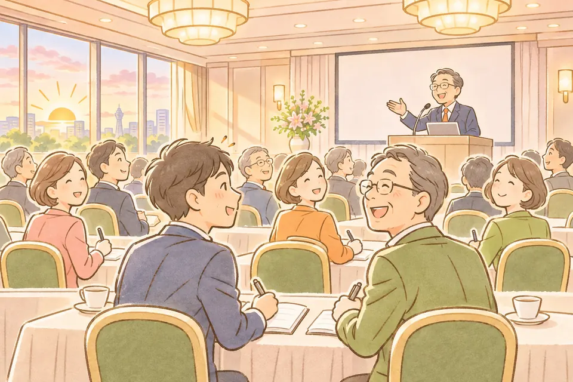
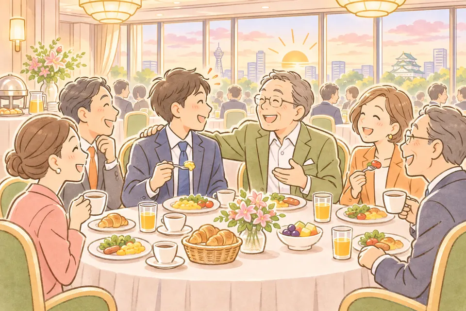

ご入会おめでとうございます
ようこそ、大阪中央区へ。
ようこそ、大阪中央区へ。
金曜の朝から、
新しい毎日が始まります。
「応援し、応援される中央区」。
新しい仲間のあなたを、全員で応援します。
まずは一緒に、金曜の朝を迎えましょう。
会長 尼崎 錬一文面は仮
1今日の登録
2金曜の朝に参加
3仲間とつながる
あなたには最初の相談相手「バディ」がつきます。
お名前は入会時にお伝えします。
1
入会初日
今日やること
バディと会えた方は、その場で一緒に。
会えなかった方も、上から順に進めればOKです。
0 / 8 完了
バディと
困ったときの連絡先ができます。会えた方はその場でQRコードを交換。会えなかった方は、紹介者からバディの連絡先を受け取ってください。
バディの招待で
- 大好きLINE：（届く情報・返信が必要か）要記入
- 明るく朗らかLINE：（届く情報・返信が必要か）要記入
バディから招待が届いたら「参加」を押せば完了です。通知が多ければ、トークごとに通知をオフにして大丈夫です。
そのほかの準備（5つ）
担当者が手配
初参加の日に、バディが紹介します。一言目は「今日からお世話になります、○○です」で十分です。
事務局の案内で
倫理法人会の公式アプリです。事務局での登録が済むと案内が届くので、その手順どおりに進めてください。
リーダーの招待で
チームリーダーから招待が届きます。「参加」を押せば完了です。
チェックはこのスマホにだけ記録されます。途中で止まったら、バディに「ここで止まっています」と送ってください。
2
毎週金曜日
はじめての金曜の朝

当日の流れ
夜明け前の街から、朝日の中へ。
- 受付でバディと合流時刻と場所は、前日にバディから届きます。
- 活力朝礼あいさつと小冊子の読み合わせ。周りに合わせれば大丈夫。
- モーニングセミナー講話者の話を聞きます。メモを取る方が多いです。
- 朝食会バディが隣に座ります。会員と話せる時間です。
会場（会場名と住所）要記入
服装（会の目安）要確認
持ち物筆記用具。小冊子『職場の教養』の受け取り方 要確認
行けなくなっても大丈夫バディに一言送るだけでOK。休んだ翌週こそ、顔を見せてくれるとみんな喜びます。
3
あなたを支える
一人にしない、4つのサポート

紹介者安心を与える
最初の不安を取り除き、安心して参加できるよう支えます。
バディ居場所をつくる
最初の仲間として一緒に参加し、つながりを手伝います。
Bチーム情報共有とフォローで支える
オリエンテーションや面談で、継続してサポートします。
所属チーム継続と成長を支える
日々の活動を通して、安心して参加できる場をつくります。
バディの3つの約束
- 初参加の前日に、こちらから連絡します
- 当日は、受付で待っています
- 朝食会では、隣に座ります
バディが来られない日は、Bチームが代わりの担当を決めてお知らせします。
ここから下は、ゆっくり読む場所です
時間のあるときに、少しずつどうぞ。4
あなたが入った会のこと
倫理法人会とは
倫理法人会のスローガン企業に倫理を
職場に心を
家庭に愛を
職場に心を
家庭に愛を
経営者が「倫理」、つまり人として正しく、明るく生きる法則を学び、仕事と家庭で実践する会です。宗教団体でも政治団体でもありません。会の中での商売や勧誘も、規程で禁止されています。
何を目的にしている会？
実行すればすぐに確かめられる生活の法則（純粋倫理）をもとに、経営者自身が変わることを出発点にしています。心を大切にする経営を目指す仲間の輪を広げ、互いを尊び共に生きる精神で健やかに栄え、地域と社会に貢献することを目的としています。
出典：倫理法人会規程 第3条（要約）
どんな規模？
8万社全国の倫理法人会が
目指している体制
目指している体制
4,750社大阪府倫理法人会の会員数
（令和8年5月時点）
（令和8年5月時点）
35単会大阪府内で目指す
地域の会の数（令和9年度）
地域の会の数（令和9年度）
180社大阪中央区が目指す会員数
（2027年8月）
（2027年8月）
出典：令和9年度 倫理法人会活動方針、大阪府倫理法人会 会長メッセージ・普及目標。地域ごとの会（単会）は、全国の各都道府県の中にあります。
どんな会とつながっている？
一般社団法人 倫理研究所『万人幸福の栞』の著者・丸山敏雄が始めた、倫理の研究と普及の団体
倫理法人会（全国）経営者のための会。各都道府県に倫理法人会がある
大阪府倫理法人会府内をブロックに分け、地域ごとの会を支える
大阪中央区倫理法人会あなたが入った会。毎週金曜の朝に集まります
どんな学びの場がある？
経営者モーニングセミナー毎週金曜の朝。講話者の体験談から学ぶ、会の中心となる場
活力朝礼『職場の教養』を使った朝礼。会社に導入する指導も受けられる
倫理経営基礎講座倫理の考え方を基本から順に学べる講座
経営者倫理セミナー富士山麓の研修所で、日常を離れて自分と向き合う宿泊研修
後継者倫理塾会社を継ぐ人・継いだ人のための学びの場
倫理経営の個別相談経営や家庭の悩みを、研究所の講師に相談できる
開催の時期や参加方法は会によって異なります。気になるものがあれば、バディに聞いてください。
5
入会した理由に合わせて
中央区で手に入るもの
仕事のことだけでなく、家庭のこと、生き方のこと、自分自身のこと。
あなたが入会した理由は、どれに近いですか？タップしてみてください。
学びを行動に
毎週ひとつ持ち帰り、翌日に試す
本音で話せる仲間
業種も年代も違う経営者と同じ朝を
朝の習慣
週一度の早起きが、一週間を整える
人としての信用
続けるうちに人柄が伝わっていく
家庭・身近な人
家族への言葉と表情が変わっていく
自分自身と向き合う
週に一度、立ち止まって振り返る
ここは商売の場ではありません。信頼が積み重なった先に、仕事のご縁が生まれることがあります。
先輩たちの変化
（中央区の会員の声：入会前の悩み → 続けて変わったこと）○○業・入会○年目 本人の許可を得て掲載
（中央区の会員の声）○○業・入会○年目 本人の許可を得て掲載
他の地域では、社内で勉強会を続けていた会社の社長が入会し、学びを社内の取り組みに生かしています。夫婦の関係を見つめ直したことで苦しい時期を乗り越えた、という会長の話もあります。他の地域の会員インタビューより要約（coki.jp）
一人で起業して1年ほどの頃、「朝活をしたい」と入会。続けるうちに心が落ち着き、仕事の環境も整ってきたと感じたそうです。倫理は「方法を教わるより、自分で気づく学び」だと話しています。他の地域の会報より要約（熊本県・八代市倫理法人会）
子どもの学校の役員を引き受けたことをきっかけに、「自分の生き方を問い直したい」と思うようになり、倫理法人会に出会った会長もいます。学びは経営だけでなく、地域との関わりでも生きたそうです。他の地域の会員インタビューより要約（coki.jp）
6
これからの歩み
あなたの成長ロードマップ
9つの段階は、あなたの「状態」です。
期間は目安。早い・遅いはありません。
はじめの1か月ほど
- 安心するまずは安心して参加することから。
- 知る倫理法人会や中央区、活動の流れを知ります。
- 話す会長や会員と話し、思いや考えを共有します。
- つながる会員とつながり、人間関係を広げます。
- 楽しむお茶会やイベントで、活動の幅を広げます。
- 仲間をつくる一緒に活動できる人を増やします。
- 居場所をつくるここに来ると安心できる場所になります。
- 自立する自分らしい実践を見つけ、自信を持って動けます。
- 貢献する学んだことを、仲間や地域のために生かします。
7
はじめての方へ
2冊の本と、よくある不安
手元に届く2冊
写真
（実物を撮影して差し替え）
（実物を撮影して差し替え）
『万人幸福の栞（しおり）』倫理法人会の考え方のもとになる本。丸山敏雄 著、倫理研究所 発行。17か条の短い教えが並んでいます。
読み方：1日1条ずつ、声に出して読む会員が多くいます。
読み方：1日1条ずつ、声に出して読む会員が多くいます。
写真
（実物を撮影して差し替え）
（実物を撮影して差し替え）
『職場の教養』1日1ページの小冊子。会員に毎月贈られます。活力朝礼で読み合わせるほか、会社の朝礼で使う会員もいます。
読み方：その日のページを読み、「今日の心がけ」を一つ実行する。
読み方：その日のページを読み、「今日の心がけ」を一つ実行する。
MS（モーニングセミナー）毎週金曜6:30から、講話者の話を聞く場です。
活力朝礼MSの前の朝礼。あいさつと小冊子の読み合わせ。
職場の教養毎日1ページ読む小冊子。会社の朝礼で使う会員も多くいます。
万人幸福の栞倫理の考え方をまとめた本。少しずつ読めば大丈夫です。
単会地域ごとの会のこと。ここは「大阪中央区」の単会です。
毎週は行けそうにありません
行ける週だけで大丈夫です。行けない週はバディに一言送ってください。Instagramで様子を見ておくと、次に行ったとき話に入りやすくなります。
知り合いがいなくて不安です
当日はバディが受付で待ち、朝食会でも隣に座ります。一人の時間をつくらないようにしています。
自分の仕事の話をしてもいいですか？
自己紹介でお仕事を話すのは大丈夫です。会の中での宣伝や売り込みは、規程で禁止されています。
会費や手続きのことを知りたい
会費は月額1口1万円です（倫理法人会規程 第6条）。会員には『職場の教養』が贈られます。手続きのことは事務局にお問い合わせください。（問い合わせ先）要記入
何を聞けばいいかわかりません
「次の金曜、何時にどこへ行けばいいですか？」の一言からで十分です。
8
いつでもここへ
今週の案内・困ったとき
今週のモーニングセミナー
（講話者・テーマ・日付）更新方法を決める
困ったとき
まずはバディへLINEで一言。
返事がないときは、Bチームの担当（お名前）へ。要記入